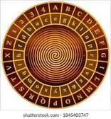

Ciphers have been around for a long time. Juluis Caeser famously used a cipher called the Caeser Cipher. This Cipher was followed by other cyphers that improved on the basic design of the Caeser Cipher. The Caeser Cipher was easy to break, because of its patterns. Another famous, and more recent example of a cipher was the Enigma Machine in World War 2. The Enigma Machine was considered to be unbreakable, intil Alan Turing created a computer to break it.
